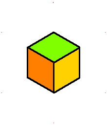
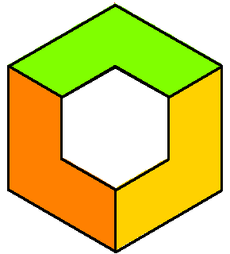
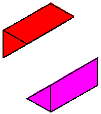
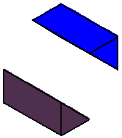
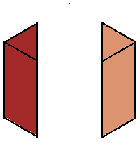
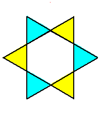
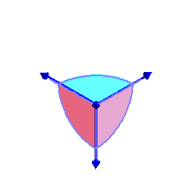

| The closure of the coamoeba of the plane in (C*)3 with equation x+y+z+1=0 is the complement in the fundamental domain [-π,π]3 of the open zonotope generated by the four vectors (-π,0,0), (0,-π,0), (0,0,-π), and (π,π,π). |  |  |
| The phase limit set of the plane has four components, each is a cylinder over the phase limit set of a line obtained by contracting one of the four coordinates/directions (-π,0,0), (0,-π,0), (0,0,-π), and (π,π,π) (x,y,z, and 1, respectively.) | |||
|
 Phase limit set as x→0 |
 Phase limit set as y→0 |
 Phase limit set as z→0 |
 Phase limit set as 1→0 |
|
These components of the phase limit set correspond to the four rays of
the tropical variety (here a fan) of the plane.
The union of (the closures of) these four components of the phase limit set is the (closure of) the coamoeba, and a
general point of the coamoeba lies in exactly two of these phase limit sets. |
 |
||